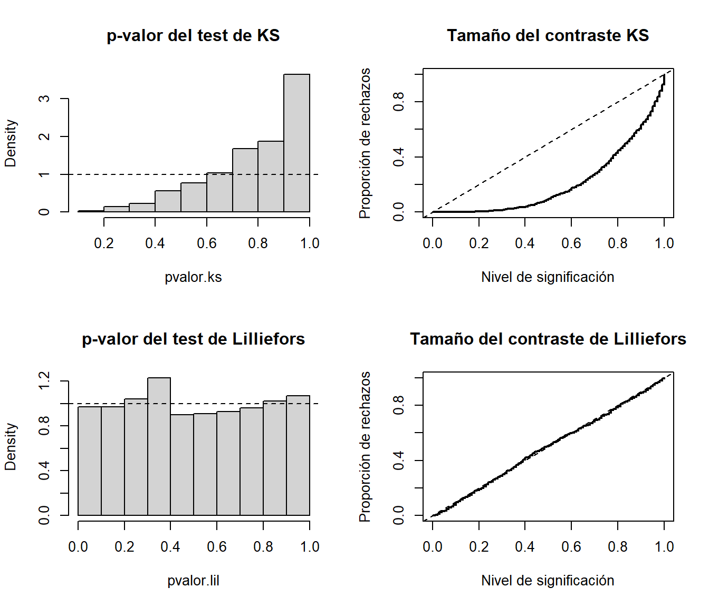
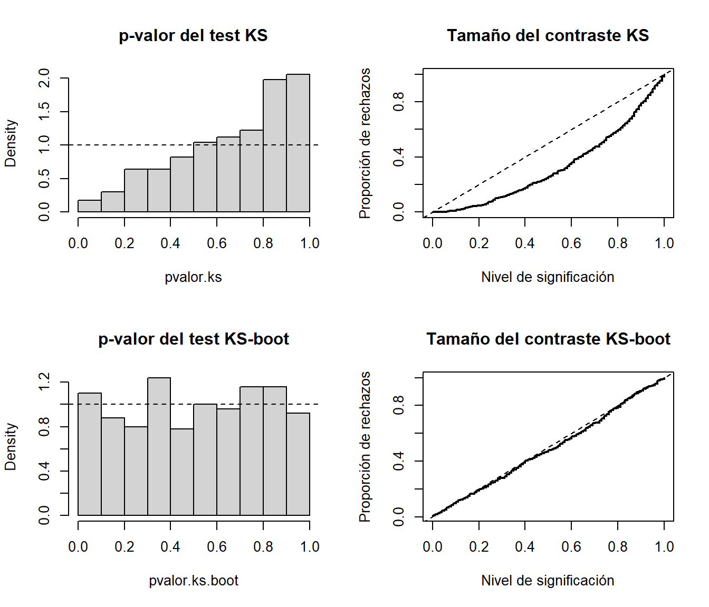

5.2 Contrastes bootstrap paramétricos
En los casos en los que la hipótesis nula especifica por completo la distribución (hipótesis nula simple) o solo desconocemos los valores de algunos parámetros (hipótesis nula paramétrica compuesta) podemos emplear bootstrap paramétrico para obtener las remuestras bootstrap de los datos (realmente en el primer caso se trataría de simulaciones Monte Carlo). Siempre hay que tener en cuenta que las réplicas bootstrap del estadístico se deberían obtener empleando el mismo procedimiento utilizado en la muestra (p.e. reestimando los parámetros si es el caso).
5.2.1 Ejemplo: contraste de Kolmogorov-Smirnov
Se trata de un contraste de bondad de ajuste (similar a la prueba de
Cramer-von Mises o a la de Anderson-Darling, implementadas en el paquete
goftest de R, que son en principio mejores).
A partir de \(X_1,\ldots ,X_n\) m.a.s. de \(X\) con función de distribución \(F\),
se pretende contrastar:
\[\left \{
\begin{array}{l}
H_0 : F = F_0 \\
H_1 : F \neq F_0
\end{array}
\right. \]
siendo \(F_0\) una función de distribución continua.
El estadístico empleado para ello compara la función de distribución bajo
\(H_0\) (\(F_0\)) con la empírica (\(F_n\)):
\[\begin{aligned}
D_n=&\sup_{x}|F_n(x)-F_0(x)| \\
=&\max_{1 \leq i\leq n}\left \{
|F_n(X_{(i)})-F_0(X_{(i)})|,|F_n(X_{(i-1)})-F_0(X_{(i)})|\right \} \\
=&\max_{1 \leq i\leq n}\left \{ \frac{i}{n}-F_0(X_{(i)}), \ F_0(X_{(i)})-\frac{i-1}{n}\right \} \\
=&\max_{1 \leq i\leq n}\left \{ D_{n,i}^{+},\ D_{n,i}^{-}\right \},
\end{aligned}\]
y su distribución bajo \(H_0\) no depende \(F_0\) (es de distribución libre),
si \(H_0\) es simple y \(F_0\) es continua.
Esta distribución está tabulada (para tamaños muestrales grandes se utiliza
la aproximación asintótica) y se rechaza \(H_0\) si el valor observado \(d\)
del estadístico es significativamente grande:
\[p = P \left( D_n \geq d \right) \leq \alpha.\]
Este método está implementado en la función ks.test() del paquete base de R:
ks.test(x, y, ...)donde x es un vector que contiene los datos, y es una función de distribución
(o una cadena de texto que la especifica; también puede ser otro vector de datos
para el contraste de dos muestras) y ... representa los parámetros de la distribución.
Si \(H_0\) es compuesta, el procedimiento habitual es estimar los parámetros desconocidos por máxima verosimilitud y emplear \(\hat{F}_0\) en lugar de \(F_0\). Sin embargo, al proceder de esta forma es de esperar que \(\hat{F}_0\) se aproxime más que \(F_0\) a la distribución empírica, por lo que los cuantiles de la distribución de \(D_n\) pueden ser demasiado conservativos (los \(p\)-valores tenderán a ser mayores de lo que deberían) y se tenderá a aceptar la hipótesis nula.
Para evitar este problema, en el caso de contrastar normalidad se desarrolló el test
de Lilliefors, implementado en la función lillie.test() del paquete nortest
(también hay versiones en este paquete para los métodos de Cramer-von Mises y
Anderson-Darling). Como ejemplo analizaremos el comportamiento de ambos métodos
para contrastar normalidad considerando 1000 pruebas con muestras de tamaño 30 de
una \(\mathcal{N}(0,1)\) (estudiaremos el tamaño de los contrastes).
# Valores iniciales
library(nortest)
set.seed(1)
nx <- 30
mx <- 0
sx <- 1
nsim <- 1000
# Realizar contrastes
pvalor.ks <- numeric(nsim)
pvalor.lil <- numeric(nsim)
for(isim in 1:nsim) {
rx <- rnorm(nx, mx, sx)
pvalor.ks[isim] <- ks.test(rx, "pnorm", mean(rx), sd(rx))$p.value
pvalor.lil[isim] <- lillie.test(rx)$p.value
}Bajo la hipótesis nula el \(p\)-valor debería de seguir una distribución uniforme, por lo que podríamos generar el correspondiente histograma para estudiar el tamaño del contraste. Alternativamente podríamos representar su función de distribución empírica, que se correspondería con la proporción de rechazos para los distintos niveles de significación.
old.par <- par(mfrow=c(2, 2))
# Histograma
hist(pvalor.ks, freq=FALSE, main = "p-valor del test de KS")
abline(h=1, lty=2) # curve(dunif(x,0,1), add=TRUE)
# Distribución empírica
curve(ecdf(pvalor.ks)(x), type = "s", lwd = 2,
main = 'Tamaño del contraste KS', ylab = 'Proporción de rechazos',
xlab = 'Nivel de significación')
abline(a=0, b=1, lty=2) # curve(punif(x, 0, 1), add = TRUE)
# Histograma
hist(pvalor.lil, freq=FALSE, main = "p-valor del test de Lilliefors")
abline(h=1, lty=2) # curve(dunif(x,0,1), add=TRUE)
# Distribución empírica
curve(ecdf(pvalor.lil)(x), type = "s", lwd = 2,
main = 'Tamaño del contraste de Lilliefors', ylab = 'Proporción de rechazos',
xlab = 'Nivel de significación')
abline(a=0, b=1, lty=2) # curve(punif(x, 0, 1), add = TRUE)
par(old.par)En el caso del contraste de Kolmogorov-Smirnov (KS) se observa que el \(p\)-valor tiende a tomar valores grandes y por tanto se rechaza la hipótesis nula muchas menos veces de las que se debería.
En el caso de otras distribuciones se puede emplear bootstrap paramétrico para aproximar la distribución del estadístico del contraste. Es importante recordar que el bootstrap debería imitar el procedimiento empleado sobre la muestra, por lo que en este caso también habría que estimar los parámetros en cada remuestra (en caso contrario aproximaríamos la distribución de \(D_n\)).
Por ejemplo, la siguiente función implementaría el contraste KS de bondad de ajuste de una variable exponencial aproximando el \(p\)-valor mediante bootstrap paramétrico:
ks.exp.boot <- function(x, nboot = 10^3) {
DNAME <- deparse(substitute(x))
METHOD <- "Kolmogorov-Smirnov Test of pexp by bootstrap"
n <- length(x)
RATE <- 1/mean(x)
ks.exp.stat <- function(x, rate = 1/mean(x)) { # se estima el parámetro
DMinus <- pexp(sort(x), rate=rate) - (0:(n - 1))/n
DPlus <- 1/n - DMinus
Dn = max(c(DMinus, DPlus))
}
STATISTIC <- ks.exp.stat(x, rate = RATE)
names(STATISTIC) <- "Dn"
# PVAL <- 0
# for(i in 1:nboot) {
# rx <- rexp(n, rate = RATE)
# if (STATISTIC <= ks.exp.stat(rx)) PVAL <- PVAL + 1
# }
# PVAL <- PVAL/nboot
# PVAL <- (PVAL + 1)/(nboot + 1) # Alternativa para aproximar el p-valor
rx <- matrix(rexp(n*nboot, rate = RATE), ncol=n)
PVAL <- mean(STATISTIC <= apply(rx, 1, ks.exp.stat))
return(structure(list(statistic = STATISTIC, alternative = "two.sided",
p.value = PVAL, method = METHOD, data.name = DNAME),
class = "htest"))
}Como ejemplo estudiaremos el caso de contrastar una distribución exponencial considerando 500 pruebas con muestras de tamaño 30 de una \(Exp(1)\) y 200 réplicas bootstrap (para disminuir el tiempo de computación).
# Valores iniciales
set.seed(1)
nx <- 30
ratex <- 1
nsim <- 500
# Realizar contrastes
pvalor.ks <- numeric(nsim)
pvalor.ks.boot <- numeric(nsim)
for(isim in 1:nsim) {
rx <- rexp(nx, ratex)
pvalor.ks[isim] <- ks.test(rx, "pexp", 1/mean(rx))$p.value
pvalor.ks.boot[isim] <- ks.exp.boot(rx, nboot = 200)$p.value
}
# Generar gráficos
old.par <- par(mfrow=c(2, 2))
# Histograma
hist(pvalor.ks, freq=FALSE, main = "p-valor del test KS")
abline(h=1, lty=2) # curve(dunif(x,0,1), add=TRUE)
# Distribución empírica
curve(ecdf(pvalor.ks)(x), type = "s", lwd = 2,
main = 'Tamaño del contraste KS', ylab = 'Proporción de rechazos',
xlab = 'Nivel de significación')
abline(a=0, b=1, lty=2) # curve(punif(x, 0, 1), add = TRUE)
# Histograma
hist(pvalor.ks.boot, freq=FALSE, main = "p-valor del test KS-boot")
abline(h=1, lty=2) # curve(dunif(x,0,1), add=TRUE)
# Distribución empírica
curve(ecdf(pvalor.ks.boot)(x), type = "s", lwd = 2,
main = 'Tamaño del contraste KS-boot', ylab = 'Proporción de rechazos',
xlab = 'Nivel de significación')
abline(a=0, b=1, lty=2) # curve(punif(x, 0, 1), add = TRUE)
par(old.par)